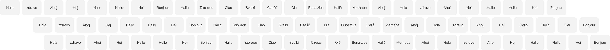
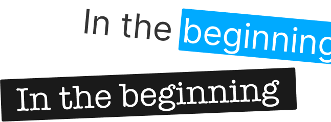

If you can edit text,
you can make podcasts.
Descript is the AI-powered, fully featured, end-to-end video editor
that you already know how to use.
Descript is the AI-powered, fully featured, end-to-end video editor
that you already know how to use.


No need to learn a new tool--Descript works like the tools
you've already learned.
Edit audio and video by editing text
Cut, copy, and paste. Type to generate words in your voice using AI speech.
Arrange visuals like a slide deck
Use templates and layouts to quickly make stuff that looks good.
Record, edit, collaborate, and publish
Descript covers your full workflow.
Descript's AI editorial assistant tackles the tedium and leaves
the creative stuff to you.
Let AI find the clips most likely to go viral, then use your creativity and Descript's easy editing to make them pop.
Take your content to new markets with blazing-fast AI translation.
Go ahead, read your script. AI will make it seem like you were looking at the camera the whole time.
Use generative AI to remove noise and enhance voices. No pricey mics or soundproofing required.

Instantly cut all your "ums," "uhs" and other filler words. You'll save hours.

Don't bother straightening up.Descript's
AI will scrub out your background.
You pick a new one.

Drag in an audio or video file.Ai will
transcribe it in moments.Now the magic
starts.

Go ahead, read your script. AI will make it seem like you were looking at the camera the whole time.
You don’t need multiple subscriptions to
different tools to create for all your platforms. You just need Descript.
For YouTube, social media, or your
website. Quick screen recordings, epic
video manifestos, or clips from a
webinar. Descript does it all.
Record, transcribe, edit, refine, publish,
promote. All in Descript. All as
easy as point-and-click, drag-and-drop, type
-and-talk.
Use Descript’s AI to choose the moments
most likely to go viral (it just knows), then
use your creativity, and Descript’s point-and-click editing, to make clips that pop.
everyone on your team started making video for every one
of your channels — marketing, educational, internal — and
scale up fast.
$0
No credit card required
Start your journey with text-based editing
 1 transcription hour / month
1 transcription hour / month Export 720p, with watermarks
Export 720p, with watermarks Limited trial of Basic AI features
Limited trial of Basic AI features Limited trial of AI Speech
Limited trial of AI Speech$12
per person/month, billed annually
Elevate your projects, watermark-free
10 transcription hours / month Export 1080p, watermark-free
2 0 uses / month of Basic AI suiteincluding Filler Word Removal, Studio Sound, Draft Social Posts, Create Clips, and more
30 minutes / month of AI speech$24
per person/month, billed annually
Unlock advanced AI-powered creativity
30 transcription hours / month
Export 4k, watermark-free
Unlimited use of Basic and Advanced AI suite including Eye Contact, Translate Captions, and 20+ more AI features
120 minutes / month of AI speech